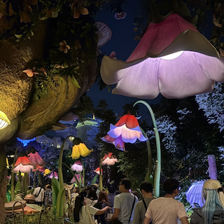
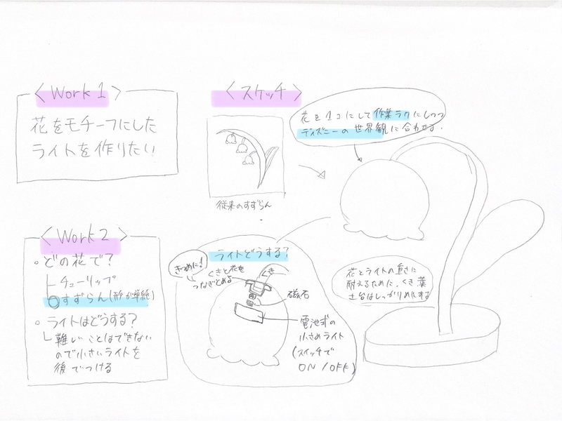

ライト点灯なし
かわいい
今回は、「自分が情熱を注げられるもの」を作成しました。
このテーマは、レズニックが提唱するクリエイティブ・ラーニングの
基本原則である4Pに基づいています。
学習者自身の情熱や興味を出発点とし、
試行錯誤を通して主体的・創造的な学びを深めることを前提としています。
🌟レズニックの４Pとは？
東京ディズニーシー・ファンタジースプリングスエリアにある
「フェアリー・ティンカーベルのビジーバギー」の待機列にある
大きなお花の照明が好きだったので、違う花で作りたいと思いました。



かわいい

想像より花の部分が光った。
かわいい